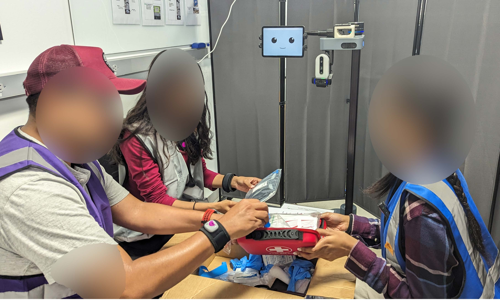

|
Rabeya Jamshad I am a graduate student research at the Healthcare Robotics Lab at UC San Diego, where my research focuses on building robots that can support teams in dynamic contexts. |

ResearchMy research interests lie at the intersection of robotics, learning and team research. |
|

|
Human-Robot Action Teams: A Behavioral Analysis of Team Dynamics
Arthi Haripriyan, Rabeya Jamshad, Preeti Ramaraj, Laurel D Riek ROMAN, 2024 IEEE ROMAN 2024 We explored how a robot's functional and social behaviors infuenced intra-team dynamics. |
|
|
Taking Initiative in Human-Robot Action Teams: How Proactive Robot Behaviors Affect Teamwork
Rabeya Jamshad, Arthi Haripriyan, Advika Sonti, Susan Simkins, Laurel D Riek LBR HRI, 2024 HRI 2024 Companion We explored the design of proactive robot behaviors in human-robot action teams using the escape room paradigm. |

|
Robot, Uninterrupted: Telemedical Robots to Mitigate Care Disruption
Sachiko Matsumoto, Rabeya Jamshad, Pratyusha Ghosh, Laurel D. Riek HRI, 2023 HRI Paper 2023 We explored methods to help emergency medicine clinicians manage interruptions through the appropriate design of mobile telemanipulator robots. |


|
Design of a Crib Mobile to Support Studies in the Early Detection of Cerebral Palsy
Rabeya Jamshad, Katelyn E Fry, Yu-ping Chen, Ayanna Howard MSc Thesis, 2019 MSc Thesis / IEEE ROMAN Paper 2019 I designed, developed and validated an at-home robot crib mobile to facilitate the early diagnosis of motor development delays in at-risk infants. |
Related Work |
|
|
InGroup 2024 Symposium HRI 2024 Workshop on Social Signals for HRI (SS4HRI)[Second author] HRI 2024 Poster InGroup 2023 Poster UC San Diego Open House 2022-2023 |
Academic Service |
|
|
Graduate and Undergraduate Student Research Mentor, UC San Diego |
|
|
Instructor - Design for Change: Technology and Innovation for Communities (Short Course) LUMS, Pakistan |
|
This website was developed by using Jon Barron's source code available here. |